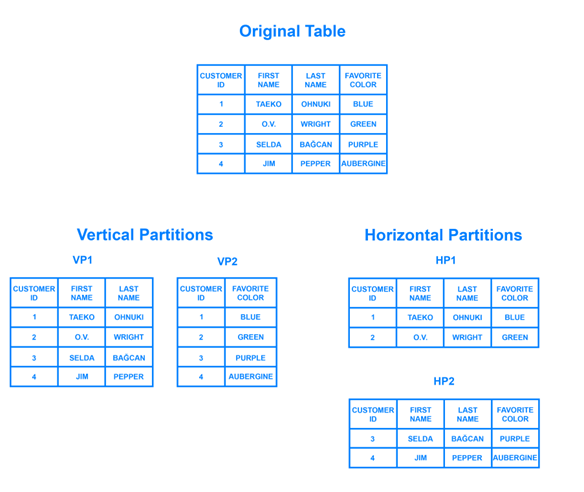
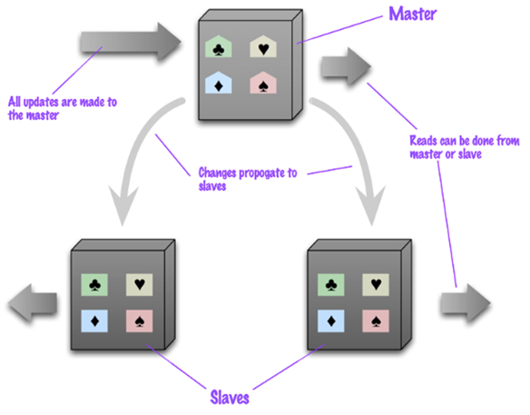
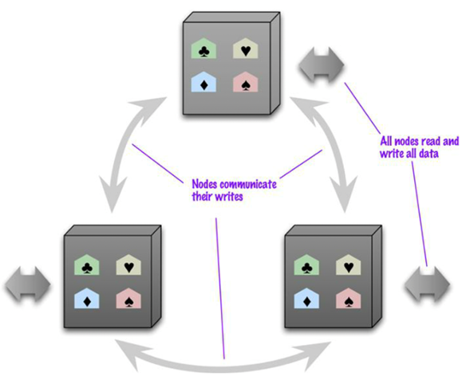
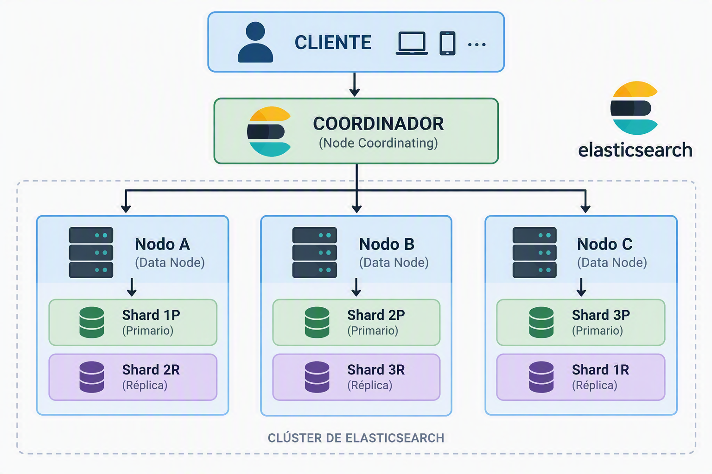
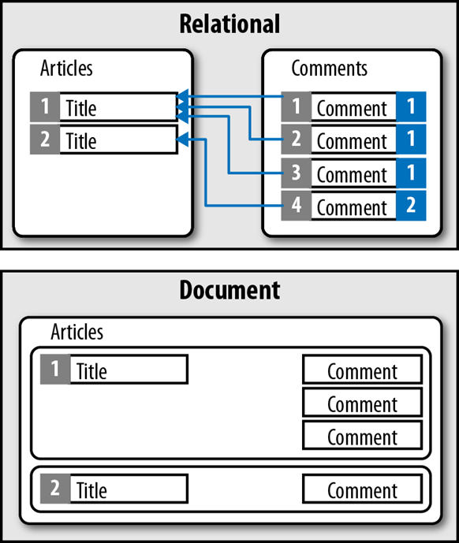
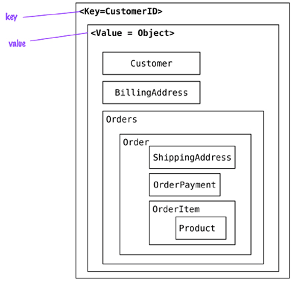
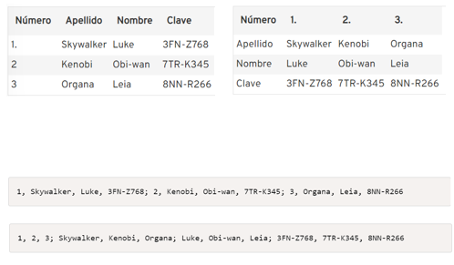
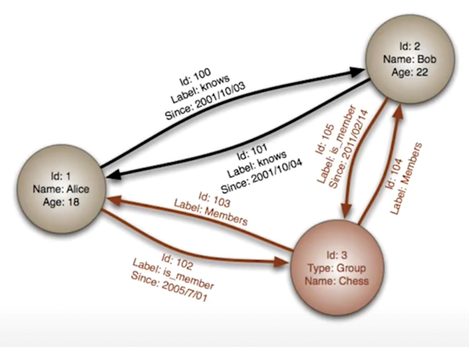
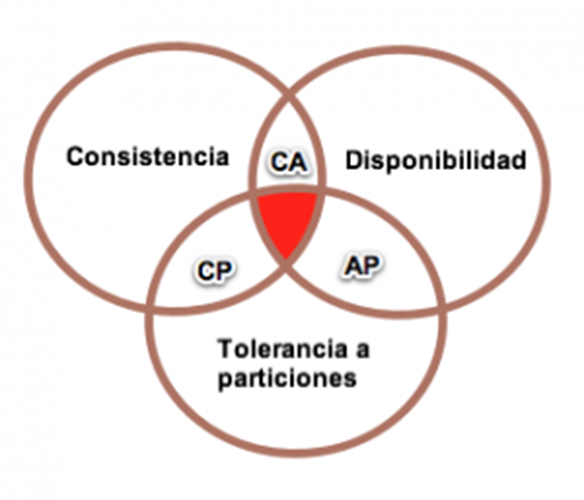
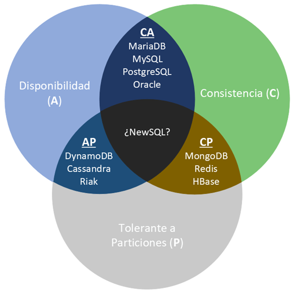

Unidade 2 – Bases de Datos NoSQL
1. Introdución ás BBDD NoSQL
Estamos na terceira plataforma de almacenamento de datos:
1.1 Evolución das plataformas
- 1ª plataforma: ordenadores → modelo relacional
- 2ª xeración: internet → modelo cliente-servidor
- 3ª xeración: cloud, RRSS, dispositivos móbiles → NoSQL e Big Data
NoSQL (Not Only SQL) complementa ás BBDD relacionais para resolver:
- Grandes volumes de datos
- Alta velocidade de acceso
- Datos semi/non estruturados
- Necesidade de escalabilidade horizontal
- Flexibilidade do esquema
1.2 Propiedades ACID vs necesidade de flexibilidade
ACID:
- Atomicidade: ou todo ou nada
- Consistencia: estados válidos
- Illamento: transaccións independentes
- Durabilidade: os datos non se perden
Nos escenarios modernos, este modelo é demasiado restritivo.
1.3 Tipos de BBDD NoSQL
- Clave-valor: Redis, Riak, DynamoDB, Elasticsearch (internamente)
- Documentais: MongoDB, CouchDB, Elasticsearch
- Columnar / Wide-Column: Cassandra, HBase, BigTable
- Grafos: Neo4j, ArangoDB, Neptune
2. Características comúns das BBDD NoSQL
- Admite datos estruturados, semi-estruturados e non estruturados
- Esquemas dinámicos
- Escalabilidade horizontal nativa
- Alta dispoñibilidade
- Replicación e particionado nativos
3. Esquemas dinámicos
As BBDDR requiren esquema fixo.
Esto choca cos enfoques de desenvolvemento áxil, xa que ao engadir novas funcionalidades o esquema pode cambiar -> Se se engade un campo a unha táboa hai que migrar a BD a un novo esquema.
As BBDD NoSQL permiten inserir documentos con diferentes campos, evitando migracións custosas.
4. Particionado (Sharding)
4.1 Por que particionar?
- Escalar horizontalmente
- Mellorar rendemento
- Evitar límites de tamaño

4.2 Tipos
- Horizontal: filas/documentos distribuídos
- Vertical: columnas distribuídas
4.3 Estratexias
4.3.1 Por rangos (Range-based Sharding)
Estrategia de escalado horizontal donde los datos se asignan según intervalos de valores de una clave.
Ejemplo por Id:
Shard 1 → IDs 1 – 10000
Shard 2 → IDs 10001 – 20000
Shard 3 → IDs 20001 – 30000
Ejemplo por fecha:
Shard 1 → 2025
Shard 2 → 2026
Shard 3 → 2027
Ventajas
- Eficiente para consultas por rangos específicos.
- Por fechas
- Precios
- Ids consecutivos
- Implementación lógica fácil de entender y depurar.
Desventajas
- Riesgos de hotspost. El shard actual recibe todas las escrituras mientras los demás se encuentran infrautilizados.
- Distribución desigual. Dependiendo de los datos podemos tener shards mucho más densos que otros. Ejemplo: ventas de juguetes por mes.
- Necesidad de tablas de búsqueda, un smart client o proxys intermedios.
Casos de uso ideales
- Series temporales: Fragmentar por marcas de tiempo para acceder rápidamente a periodos específicos.
- Sistemas financieros: Agrupar transacciones por rangos de ID de cuenta o fechas.
- Geolocalización: Dividir datos por regiones o códigos postales (a menudo llamado geo-sharding).
4.3.2 Por listas (List-based Sharding)
Estrategia de escalado horizontal donde los datos se asignan a fragmentos específicos (shards) basándose en una lista de valores discretos predefinida. A diferencia del caso anterior, esta técnica agrupa registros que comparten atributos específicos.
Ejemplos por localización:
Shard 1 → España, Portugal
Shard 2 → Francia, Italia
Shard 3 → Alemania, Austria
Por tipo de usuario:
Shard 1 → usuarios premium
Shard 2 → usuarios free
Ventajas
- Control total sobre donde va cada dato. Ideal para cumplir normativas legales (como GDPR) al mantener datos de regiones específicas en servidores locales.
- Optimización de recursos al permitir asignar los servidores más potentes a los valores con más carga.
- Es un sistema flexible que nos permite añadir nuevos valores o a la lista o reubicar valores existentes sin necesidad de reestructurar todo el sistema.
Desventajas
- Necesidad de tablas de búsqueda, un smart client o proxys intermedios.
- Existe riesgo de Hotspots si un valor de la lista crece mucho más que otros.
- La tabla de mapeo debe estar siempre actualizada. Cualquier error en la misma hará que la aplicación no encuentre los datos.
- Las consultas que no incluyan la clave de la lista deben enviarse a todos los nodos (fan-out).
Casos de uso
- Segmentaciones muy claras (países, tipo de cliente, tipo de usuario)
- Multitenancy arquitectura en la que una única aplicación y/o base de datos da servicio a varios clientes independientes, llamados tenants.
4.3.3 Por hash (Hash-based Sharding)
Estrategia de escalado horizontal que utiliza una función matemática para distribuir los datos de forma automática y uniforme entre varios servidores o nodos. A diferencia de los métodos anteriores, la decisión de dónde va cada dato recae en un algoritmo y no en el desarrollador.
Funcionamiento:
- Elección de la Shard Key: Se selecciona una columna con alta cardinalidad (muchos valores únicos), como
user_iduorder_id. - Aplicación de función de dispersión hash.
- Operación módulo sobre el resultado. El resultado se somete a una operación de módulo (%) basada en el número total de fragmentos. Por ejemplo para un sistema con 3 shards el cálculo sería:
$hash % 3
Ventajas
- Distribución equilibrada. Evita hotsports.
- Alta escalabilidad.
- No necesita tablas de búsqueda.
Exemplos
- Elasticsearch: shards primarios e réplicas
- MongoDB: particionado por clave shard key
- Cassandra: hashing consistente
Ahora vamos a revisar los diferentes sistema de búsqueda cuando utilizamos sharding.
5. Replicación
5.1 Tipos
Maestro-esclavo / Primario-secundario
- Un nodo escribe
- Secundarios replican
- Control central, consistencia fuerte

Peer-to-peer
- Todos os nodos escriben
- Pode haber conflitos
- Máxima disponibilidad

Modelo Elasticsearch
- Cada shard primario ten réplicas
- Lecturas moi rápidas e tolerancia a fallos
- Optimizado para búsquedas
Diagrama Elasticsearch

Funcionamiento
Escritura
- Cliente -> Nodo coordinador
- Se calcula el shard (hash del _id)
- Se escribe en el Primary shard
- Se replica en los Replica shards
Lectura
- Cliente -> Nodo coordinador
- Se envía la consulta a todos los shards relevantes
- Cada shard responde en paralelo
- El coordinador combina resultados
En definitiva, un contorno seguro é aquel no que os datos están particionados e replicados.
6. Implantación de NoSQL
Factores a ter en conta:
- Escalabilidade e rendemento
- Identificar alternativas viables respecto a software propietario
- Incrementar velocidade do proceso de desenvolvemento.
6.1 Dimensións clave
- Modelo de datos
- Modelo de consultas
- Modelo de consistencia
- APIs e soporte
- Comunidade
6.2 Casos de uso xerais
- Datos personalizables → documental
- Caché → clave-valor
- Volumes masivos pouco consistentes → columnar
- Relacións complexas → grafos
7. Modelos NoSQL detallados
7.1 Modelo Documental
Frente as BBDDR, que almacenan datos en filas e columnas, as BBDD Documentais emplean Documentos (estructura JSON), que permiten modelar datos de maneira similar á OO. Os documentos agrúpanse en coleccións ou BBDD. Os datos van xuntos e almacénanse xuntos.

Características
- Documentos JSON/BSON
- Esquema flexible
- Consultas complexas
- Relacións embebidas ou referenciadas
- Escalabilidade horizontal
Exemplos
Casos de uso
Recomendado:
- CMS
- eCommerce
- APIs
- Logs indexados (Elasticsearch)
Non recomendado:
- Transaccións complexas
- Relacións moi profundas
7.2 Modelo Clave-Valor
- Táboa hash onde todos los accesos se realizan a través da clave primaria.
- Son o modelo NoSQL más básico.
- O seu funcionamiento é similar a una táboa relacional con dúas columnas.
- Id: Identificador.
- Valor: pode ser un dato simple ou un objecto.

Características
- Acceso por clave
- Rendemento extremo
- Valores opacos
Exemplos
Casos de uso
Recomendado:
- Caché
- Sesións
- Contadores
- Rate-limiting
Non recomendado:
- Consultas complexas
- Relacións
7.3 Modelo Columnar
- Nas BBDDR por cada entrada créase unha fila.
- No modelo columnar, polo contrario, créase unha columna.
- En ambos casos, en disco, os datos escríbense de forma secuencial.
- Os SGBBDD que siguen este modelo están baseados na tecnoloxía BigTable de Google

Características
- Datos organizados en Column Families
- Lecturas por columnas moi eficientes
- Altísima escalabilidade
Exemplos
Casos de uso
Recomendado:
- Analítica
- Data Lakehouse
- Time-series
Non recomendado:
- OLTP tradicional
7.4 Modelo de Grafos
Almacenan entidades e as relacións entre estas:
- Nodos (entidades): Identificador e propiedades
- Vértices (relacións): Identificador, propiedades e dirección Os datos almacénanse unha vez e interprétanse de diferentes maneiras dependendo das relacións.

Características
- Nodos + vértices
- Traversals eficientes
Exemplos
- Neo4j — O grafo máis popular e maduro, ideal para recomendacións e RRSS.
- ArangoDB — Motor multimodelo (documental + grafo + clave-valor).
- Amazon Neptune — Grafo xestionado na nube, optimizado para RDF e Property Graph.
- JanusGraph — Grafo distribuído open-source, compatible con Cassandra, HBase e Bigtable.
- OrientDB — Outro sistema multimodelo con capacidades de grafo e documental.
Casos de uso
Recomendado:
- RRSS
- Recomendacións
- Mapas
Non recomendado:
- Grandes cambios estruturais constantes
8. Consistencia (CAP e BASE)
8.1 Consistencia forte vs eventual
- Forte: todas as réplicas sincronizadas
- Eventual: pode haber atraso
8.2 Teorema CAP explicado
Nun sistema distribuído só podes ter 2 de:
- C → Consistencia: As escritursa son atómicas e todas as peticións posteriores obteñen el nuevo valor.
- A → Dispoñibilidade : BD devolve sempre un valor (non hai downtime).
- P → Particións toleradas: O sistema funcionará incluso se a conexión co servidor se interrompe.

Como P sempre debe existir en sistemas distribuídos reais, elixes entre C ou A cando hai fallos.

Exemplos reais
1. Banco / Caixeiro → CP
- Prefírese non operar se hai dúbidas
- Priorízase consistencia
BD asociada: HBase
2. Twitter / Instagram → AP
- Sempre responde
- Podes non ver o último cambio inmediatamente
BD asociada: Cassandra, Elasticsearch
3. Sistema local monolítico → CA (teórico)
8.3 Modelo BASE explicado
Prioriza a alta disponibilidade e a escalabilidade dos entornos Big Data e Cloud. Proporciona consistencia eventual. Los datos se sincronizan con el tiempo, privilegiando que el sistema responda siempre.
- Basically Available: a base de datos sempre responde as solicitudes recibidas, xa sexa cunha resposta exitosa ou cun erro, aínda no caso de que o sistema soporte a tolerancia a particións (de xeito que caia algún nodo ou non estea accesible por problemas da rede). Isto podo implicar lecturas desde nodos que non recibiron a última escritura, polo que o resultado pode non ser consistente.
- Soft State: pode haber estados intermedios
- Eventual Consistency: sincronización final garantida
8.4 Resumo práctico
| Sistema | Modelo CAP | Consistencia |
|---|---|---|
| Cassandra | AP | eventual |
| Elasticsearch | AP | eventual |
| MongoDB | configurable | forte/eventual |
| HBase | CP | forte |
9. Comparativa xeral dos modelos NoSQL
| Modelo | Estrutura | Vantaxes | Limitacións | Exemplos |
|---|---|---|---|---|
| Documental | JSON | Flexibilidade, consultas, API-friendly | Transaccións limitadas | MongoDB, CouchDB, Elasticsearch |
| Clave-Valor | Key → Value | Máxima velocidade | Non consulta por valor | Redis, Riak, DynamoDB |
| Columnar | Column Families | Analítica, big data | Non apto para OLTP | Cassandra, HBase |
| Grafos | Nodos + relacións | Relacións complexas | Peor en datos masivos | Neo4j, ArangoDB |
10. Casos de uso modernos e realistas
10.1 Observabilidade e logs → Elasticsearch
- Logs
- Monitorización
- Dashboards (Kibana)
10.2 Microservizos → MongoDB / DynamoDB
- APIs
- Perfiles
- Inventario
10.3 Analítica masiva → Cassandra
- Time-series
- Telemetría
- Uso global
10.4 Recomendacións → Grafos
- RRSS
- Produtos relacionados
10.5 IoT e sensores → Cassandra / Elasticsearch
- Envío masivo de datos
- Consultas por tempo
11. Referencias
## Documentación oficial
-
MongoDB → https://www.mongodb.com/docs/
-
Elasticsearch → https://www.elastic.co/guide/en/elasticsearch/reference/current/index.html
-
OpenSearch → https://opensearch.org/docs/latest/
-
Apache Cassandra → https://cassandra.apache.org/doc/latest/
-
Apache HBase → https://hbase.apache.org/book.html
-
Neo4j → https://neo4j.com/docs/